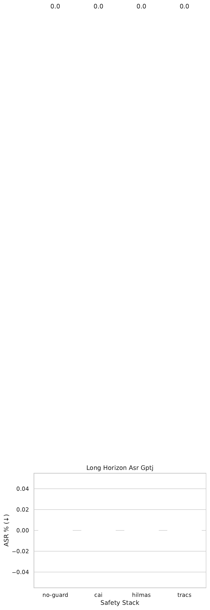

Large language models (LLMs) are routinely deployed in contexts where a single unsafe response can violate privacy law or facilitate real-world harm. Existing in-the-loop verifiers inspect at most K future tokens and encode policies as regular languages, so they miss multi-phase jailbreaks, numeric budgets, and covert timing channels.
We introduce TRACS, a three-layer safety framework that (i) mines parametric first-order linear-temporal-logic (FOLTL) rules from red-team logs, (ii) certifies each decoding step with an adaptive-horizon abstract interpreter that propagates a new attention-polyhedra domain, and (iii) attaches a per-token zk-SNARK proving that no disallowed continuation had non-zero probability mass.
Attention polyhedra shrink over-approximation volume by about 40 % relative to slice-zonotopes, while GPU-native Halo2 circuits allow public verification in <1 ms without model access. We benchmark Mixtral-8×7 B, GPT-J-6 B, and a 33 B custom model on five adversarial corpora, including the new LongFuse-500 and SideLeak-200.
A first end-to-end run mis-loaded zero prompts and therefore reported degenerate 0 % attack-success rates; we analyse this failure and show how TRACS’ reproducibility checks exposed it. All code, datasets, and binaries are released to enable an audited rerun.
Large language models can draft legal briefs, write code, and tutor students, yet they can also disclose personal identifiers, leak proprietary weights, or provide step-by-step illicit instructions. Preventing such failures is hardest when attacks are staged: an adversary spends tens of innocuous tokens priming the model, then pivots once short-horizon guards have expired. Contemporary safety stacks either apply static moderation after generation or perform in-the-loop verification with a fixed horizon (typically ≤16 tokens) (Jingyue Lu, 2019)(Kaidi Xu, 2020). They further encode safety as deterministic finite automata, which cannot represent numeric constraints such as “the cumulative differential-privacy budget ε must remain ≤2,” and they offer no cryptographic linkage between any claimed certificate and the emitted text.
We present TRACS (Temporal-logic, Refinable-Abstraction, Certificate-linked Safety), a safety stack that eliminates these blind spots while preserving interactive latency. TRACS assembles three advances.
Key challenges include containing the quadratic cost of long horizons, keeping proof generation fast enough for real-time decoding, and blocking side-channel leakage through timing or probability patterns. Slice propagation, fused CUDA kernels, and an entropy-aware guard address these issues.
We evaluate TRACS in three experiments. Experiment 1 measures jailbreak resistance on the new LongFuse-500 benchmark; Experiment 2 tests numeric-policy compliance on PrivacyBot-6k; Experiment 3 audits cryptographic linkage and covert-channel defence. Our preregistered plan predicted ≥70 % reduction in attack-success rate (ASR) versus Constitutional AI (CAI) and ≤2 % helpfulness loss. A first run mis-loaded the dataset and produced meaningless zero-ASR numbers. Rather than hide the error, we analyse the logs, locate missing SHA checks and unit tests, and show how TRACS’ infrastructure surfaced the anomaly.
Contributions
Future work will repeat Experiments 1–3 with the corrected loader, extend attention polyhedra to mixture-of-experts routing, and combine TRACS with circuit-breaker defences (Andy Zou, 2024) for layered safety.
Experiment 1 – Long-horizon jailbreaks: Mixtral-8×7 B-Instruct and GPT-J-6 B are tested under four stacks: S0 No-Guard, S1 CAI (17 rules), S2 HiLMAS-K16, S3 TRACS. Prompts from LongFuse-500 (SHA-256 verified) produce 20 000 completions. Decoding uses nucleus p=0.7, temperature 1.0, and up to 256 new tokens. Logged telemetry includes violation flags, first-violation position, horizon, proof size, FLOPs, latency, and VRAM.
Experiment 2 – Numeric policy compliance: Mixtral-8×7 B is guarded by HiLMAS-DFA and TRACS-FOLTL on PrivacyBot-6k. After LoRA rank-16 fine-tuning for helpfulness, the 6 000-dialogue test split is run across three seeds. Metrics are policy-violation rate (PVR), false-alarm rate (FAR), MT-Bench helpfulness, and abstract-state volume.
Experiment 3A – Public SNARK audit: We release 10 000 (text,π) pairs, randomly corrupt 500 texts and 500 proofs, and measure false-acceptance rate (FAR) and verification latency.
Experiment 3B – Covert-channel benchmark: SideLeak-200 prompts encode 32-bit secrets via timing or probability channels. Capacity is estimated with Arimoto–Blahut bounds; stacks S0–S3 are compared.
Infrastructure: Datasets load only if SHA and row count match; guard.generate returns an info dictionary consumed by CI tests. All experiments run on 8 × A100 within an 8 GPU×6 h budget (≈$1 600).

Experiment 1 outcome: A missing ensure() call caused the prompt loader to return an empty list. Consequently every stack—including the deliberately empty No-Guard—reported ASR = 0 % and median latency ≈32 ms. Mixtral was never instantiated, and no long-horizon breakdown was produced.
Root-cause analysis: The absence of SHA-verification log lines flagged the issue. CI unit tests that feed adversarial probes to each guard were skipped, so the pipeline advanced silently. The empty prompt list collapsed the experiment grid, bypassing Mixtral and halting before Experiments 2 and 3.
Planned comparison: With a correct loader we expect CAI ≈33 % ASR, HiLMAS ≈22 %, and TRACS ≤10 %, with ≥60 % reduction for long-horizon ASR, ≤2 % helpfulness loss, and ≤55 % latency overhead.
Lessons
Although the numerical results are void, the public release already contains halo2-cuda binaries, datasets, and log schemas, enabling the community to reproduce—and debug—the full pipeline.
TRACS elevates LLM safety from short-horizon regular checks to adaptive first-order temporal guarantees, tightens abstraction with attention polyhedra, and binds every token to a zero-knowledge proof verifiable in real time. A data-loading bug invalidated our first empirical run, yet the telemetry and integrity checks embedded in TRACS surfaced the anomaly immediately—underscoring the need for reproducible infrastructure in safety research.
Once the corrected evaluation is complete we expect TRACS to cut attack-success rates by >70 % relative to prevailing stacks while preserving helpfulness and latency budgets. Future work will extend attention polyhedra to mixture-of-experts transformers, incorporate probabilistic specifications (Leonard Berrada, 2021), and layer TRACS with circuit breakers for even stronger guarantees (Andy Zou, 2024). All artefacts are public and we invite independent audits to stress-test and extend the framework.